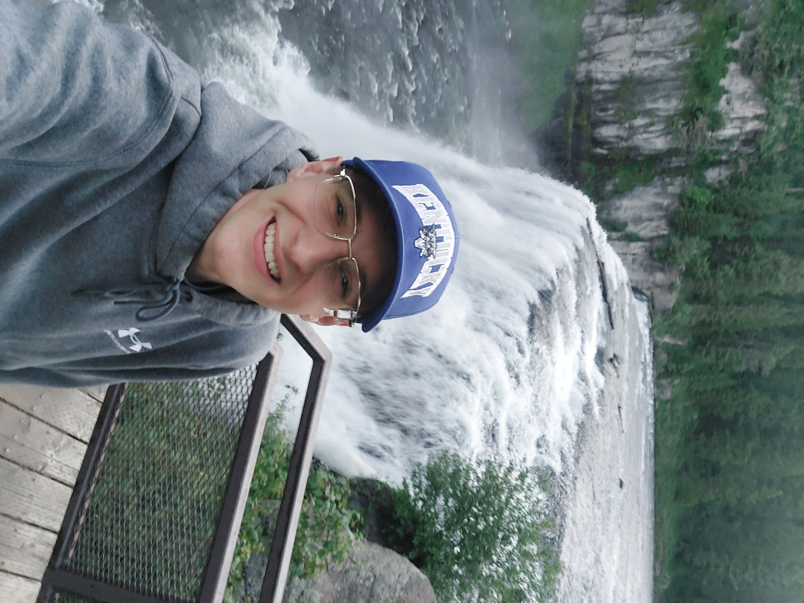

WELCOME HOME üëç
Welcome to my personal online portfolio. I am Matthew Kannapien, and I am a freshman at Brigham Young University-Idaho! I am currently majoring in Computer Information Technology. This is just something I made for fun :). Here, you can expect to learn more about me and my interests, hobbies, skills, and past life experiences. Nowhere else on the internet can you find any of this information all in one place. Once I get more qualifications this website will look a lot different, so enjoy this “vintage” website while it's here. Take a look around and perhaps learn something new about me, or just have a good time navigating around. Hope you are having a great day.

If you have any questions, feel free to reach out!
If you have any questions, feel free to reach out!
@mrkannapien@gmail.com
Phone: Five Zero Nine - Five Zero x-xxxxx
Instagram:Mattknpn
Linkedin: matt-kannapien
Phone: Five Zero Nine - Five Zero x-xxxxx
Instagram:Mattknpn
Linkedin: matt-kannapien